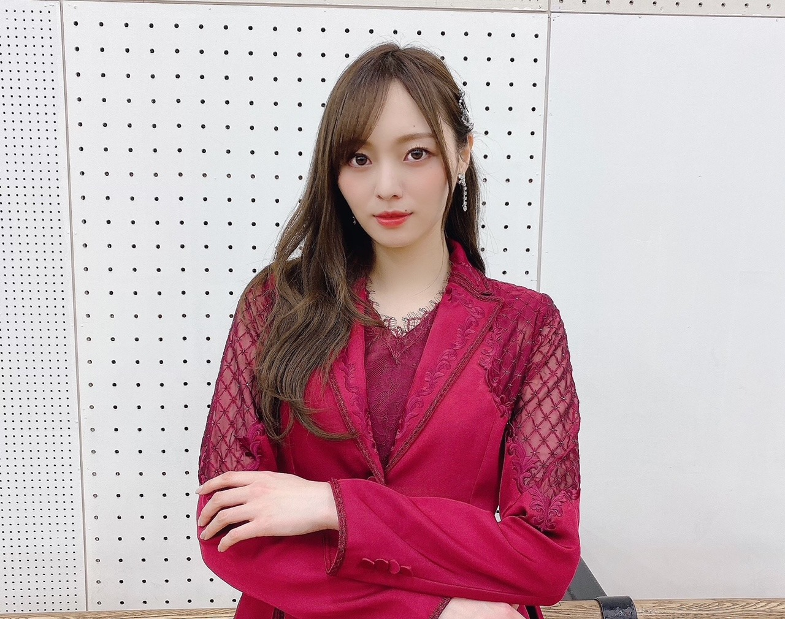
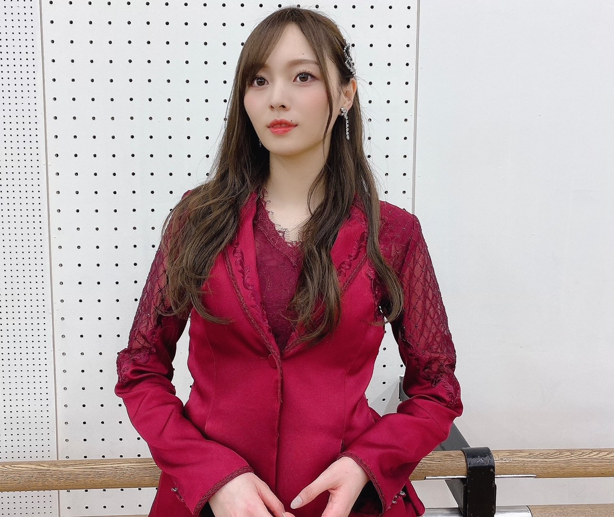
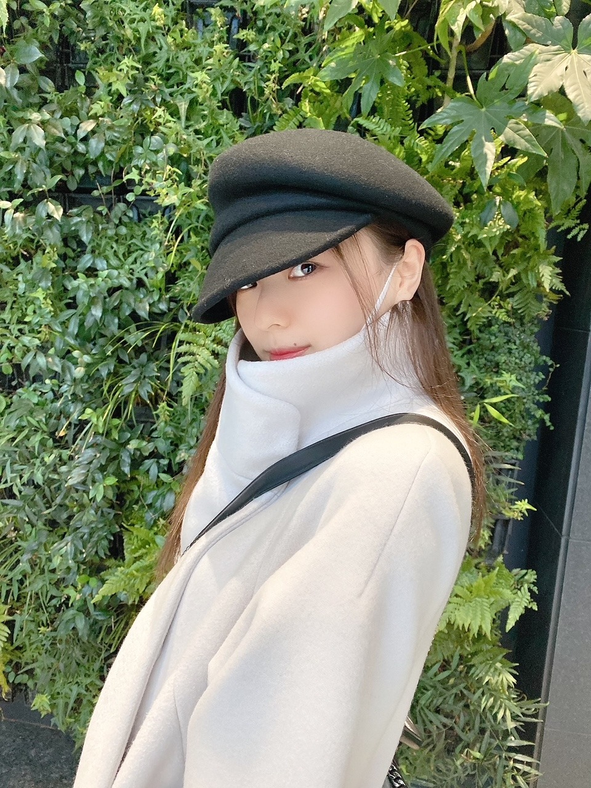
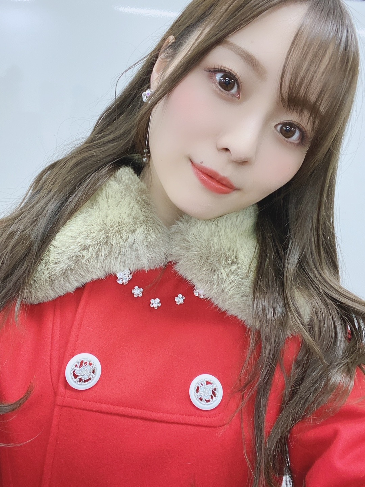

気分 時間 によって 考え方は変わっていきます

お正月、いかがお過ごしですか？
私は毎日がチートデイです。
きちんとリセットしていかなければ、、
美味しいもので溢れていて困っちまいます
食器集めにハマっていまして
通販やら雑貨屋さんなどでゲットした子達が
年始のご飯たちを素敵に彩ってくれました。
チョコレートが好きで
毎日食べちゃう。
アイスもチョコレート味ばっか選んじゃう。
今月、本物のじゃがいもそっくりのショコラが出るみたいでチェックしたりしてます
お餅も食べましたよ。
お雑煮作りました。
お醤油ベースです
皆様のお家のお雑煮は何味ベースですか？
お味噌かな？お醤油かな？
家庭の味が出ますよね☀︎
そういえば 小さい頃は餡子が苦手で
おしるこは食べれませんでしたが
今は餡子が好きになりました。粒あん派。
大人になるに連れて 味覚が変わってきたなあと実感する日々です。
お正月だからいっかー！という魔法の言葉。
どんどん口に運ばれていく食材たち。
そろそろ魔法を解いて欲しいです

２２歳になりました。
なっちゃいました。
昔は誕生日が来ることに
喜びしか感じていませんでしたが
今はなんだか誕生日を迎える心構えが違うというか、変なプレッシャーがあるというか。（笑）
歳を重ねることの重みを
ここ最近はずっしり感じています。
人生の先輩達はみんな
今のうちはたくさん失敗していいんだよ
と 声をかけてくれます。
でも、失敗さえ出来ないくらい
なにも動けていない私は
このままでいいのだろうか、、と。
慎重すぎちゃうんですよね、
警戒心も強すぎて思い切りが全然無いなあと。
ここ最近特に感じるのは
気持ちを言葉にすることが難しい。
何を感じて何を考え
どう思うのかを文字にすることが難しい。
感動する場面に立ち会って
この世界に足を踏み入れてから何度も何度もそんな場面に巡り会ってきて
涙が出て、心は明らかに動いていて
でも、そこから上手く言葉にすることがどうしても、
どうしても難しい。
言葉が上手く出てこないものだから
その時確かに感じた自分の感情を
疑ってしまうこともあるくらい。
なにか質問をされた時、
伝えたい言葉が上手く出てこないことも多いです。
当たり障りのない言葉を探してしまいます。
人に相談したいと思った時も
深く話をしたとき
空っぽだと思われるのが怖くて
相手と向かい合う段階までも進めない。
自分がどう感じたかを
何に悩んでどうしたいかを
人に伝えることが出来ない。
一人で泣くことは
いっぱい いっぱいあるのに
誰かの前で泣くことを強がって我慢してしまうのも、なんだか寂しい。
感情がぶわっと溢れそうになる時
自分でブレーキをかけてしまうんですよね
何故なのかは よく分かりません。
こんな自分を変えたいです！
変え方なんて分からないんだけどね！
でも駄目なところは分かってます！
毎年 変えたい とか 変わりたい とか
言ってる気がします
でも、こういった節目に振り返って思うのは
結局、自分に満足することなんて永遠に無いんだなってこと！
自分が一番 自分のことを分からないでいます（笑）
目標というと 違うのかもしれませんが、
２２歳は 自分の中にある感情を
どんなに未熟な言葉でもいいから
上手く伝わらなくても 綺麗な文章でなくても
自分の納得いく理想の言葉でなくてもいいから
ちゃんと 相手に伝えることを大切にしたいと思います。
がむしゃらでもいいから 伝えようとしてみる！
特にここ最近は
人と直接対面して会うことが出来ないからこそ
言葉や会話を大切にしていきたいです。
少し 暗く感じ取れるような
そんなことをつらつらと書いてしまいましたが、、
いたって前向きです！
前向きに考えた結果、
私の一番の短所はこれな気がしています

※写真の時のみマスクずらしてます
色々考える日々ではありますが
ただひたすらに
乃木坂46になれて良かったなあと思う日々です。
年齢を重ねていくごとに
思い出や 悩みや コンプレックスも同じように積み重なっていきますが
これも必死に生きている証拠です。
幸せです。
幸せをありがとうございます。
それからたくさんのメッセージ
ありがとうございます。
こっそりひっそり、見ています。
いつも本当にありがとうございます！
なにが起こるか分からないと
２０２０年を経験して改めて思いましたが
結局何事も 自分の考え方や捉え方次第だなあと！
ので、沈んだ時があっても
時間を使ってプラスに考えられる人になります︎︎︎︎✌︎
下書きを日々更新し続けていたら
長くなってしまいました。
ほらね？
思いましたでしょ？
結局何が言いたくて 何を目標にしてるのか
全然まとまってないよー！って！
そう！こんな私ですが
２２歳も梅澤美波をよろしくお願い致します！
9日には 星の王子さま の朗読劇、
新しいチャレンジです。
今年もお仕事へのたくさんの夢を持って
頑張って参ります。

年末年始の歌番組も楽しかったです。
最後に、
皆様どうか、
どうか幸せでいてください
自分を大切にしてくださいね
私の大好きで大切な人たちが
どうか幸せでありますように。
また書きます。
おやすみなさい
Original：https://www.nogizaka46.com/s/n46/diary/detail/59664?ima=4935&cd=MEMBER